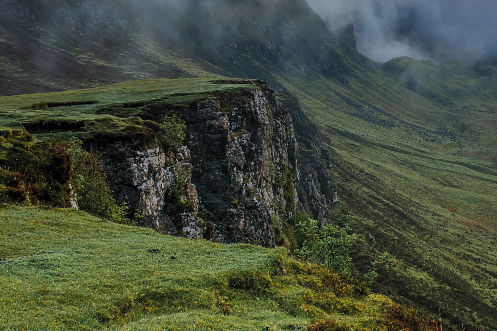

Utilization
Pemanfaatan air tanah
Terdapat pemanfaatan air tanah secara umum baik bagi manusia atau bahkan lingkungan

Bagian penting dalam siklus hidrologi

Irigasi (Sumber air bagi pertanian)
Perindustrian, seperti pada industri tekstil

Kebutuhan rumah tangga

Pembangkit listrik
